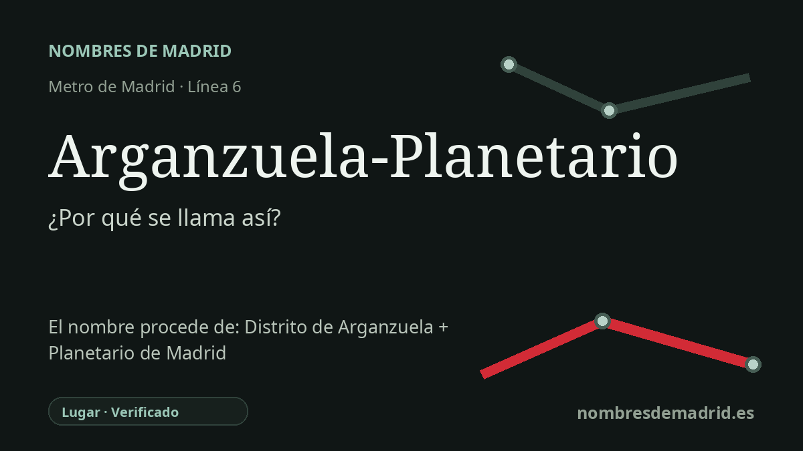

Publicado el · Investigación de Nombres de Madrid · Cómo verificamos cada origen · 8 fuentes consultadas
Respuesta rápida
Arganzuela-Planetario debe su nombre al distrito de Arganzuela y al Planetario de Madrid, junto al parque Enrique Tierno Galván. La estación abrió en la línea 6 el 26 de enero de 2007 entre Legazpi y Méndez Álvaro.
La historia del nombre
El nombre de la estación es directo y funcional. Arganzuela-Planetario combina el distrito en el que se encuentra con el cercano Planetario de Madrid, de modo que el nombre sirve a la vez como referencia geográfica y como indicación de un hito urbano reconocible.
La primera mitad del nombre, Arganzuela, es mucho más antigua que la estación de Metro. La historia municipal madrileña la vincula con la antigua Dehesa de Arganzuela, una zona de pastos junto al Manzanares; el Ayuntamiento señala que el 15 de mayo de 1492 los Reyes Católicos dieron licencia a la Villa de Madrid para acotar esa dehesa. Una explicación local posterior relaciona el topónimo con un pequeño caserío de antiguos vecinos de Arganda, conocido mediante una forma diminutiva, pero la dehesa es el puente documental más claro entre el nombre antiguo y el distrito moderno.
La segunda mitad remite a un equipamiento cívico del siglo XX. El Planetario de Madrid, centro municipal dedicado a la divulgación de la astronomía y ciencias afines, fue inaugurado el 29 de septiembre de 1986 dentro del parque Tierno Galván. Material educativo actual del propio planetario describe su cúpula de proyección, de 17,5 metros de diámetro, y recoge la renovación tecnológica de 2016-2017, que sustituyó la experiencia original de la etapa Zeiss por un sistema híbrido óptico-digital moderno.
La estación de Metro pertenece a una fase posterior de transformación urbana en el sur del centro de Madrid. La Comunidad de Madrid explica que este tramo de la línea 6, entre Legazpi y Méndez Álvaro, era más largo de lo habitual y discurría bajo una zona transformada tras la operación Pasillo Verde, con antiguos suelos industriales convertidos en usos residenciales y partes incorporadas al parque Tierno Galván. La nueva estación mejoró la funcionalidad de la línea 6 y dio servicio a un entorno residencial en crecimiento.
La interpretación mejor respaldada es, por tanto, sencilla: la estación se inauguró con su nombre compuesto actual el 26 de enero de 2007 para identificar el distrito y el planetario cercano. La explicación general de la redacción actual es correcta, pero conviene matizar algunos añadidos: no se ha localizado el acto administrativo exacto de denominación y la afirmación de que el nombre compuesto se eligió específicamente para diferenciarla de Legazpi es razonable, aunque no queda demostrada de forma directa por las fuentes oficiales consultadas.